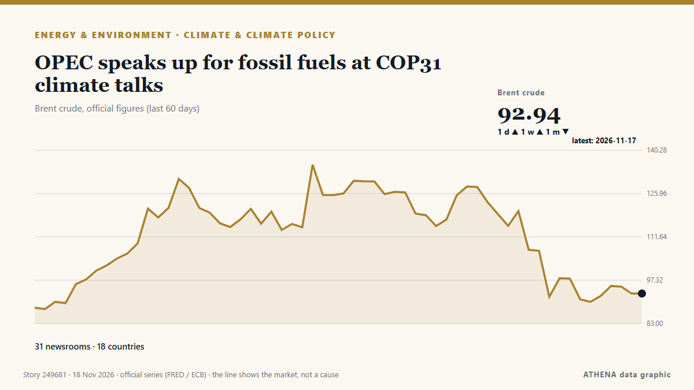

OPEC speaks up for fossil fuels at COP31 climate talks

ANTALYA, Turkey, Nov 18 - Efforts to boost electrification will depend on fossil fuels, OPEC Secretary General Haitham Al Ghais said on Wednesday at the COP31 talks, where host Turkey is seeking to… από The Straits Times
Αναφέρθηκε ανεξάρτητα από 31 μέσα σε 18 χώρες από τις 11 Νοε, πρώτο το The Business Standard (Bangladesh) (working feed)· η κάλυψη εξασθενεί. Το ATHENA εκτιμά τον κίνδυνο μέτριο (3.0/10), κυρίως λόγω της σοβαρότητάς του και της εμβέλειάς του. Βεβαιότητα 91% (υψηλή): το επιβεβαιώνουν 31 ανεξάρτητα μέσα, μέση αξιοπιστία 76%. Μέσα ανά χώρα: Μπανγκλαντές (8), Τουρκία (6), Ηνωμένες Πολιτείες (4). Κάλυψη: 11 Νοε έως 18 Νοε, 185 ώρες.
Γιατί έχει σημασία: Οι εξελίξεις στην ενέργεια και τους πόρους επηρεάζουν τις τιμές καυσίμων και ρεύματος, την ασφάλεια εφοδιασμού και τους κλιματικούς στόχους.
Τι άλλαξε: 5 νέες αναφορές από 5 μέσα στο 24ωρο έως 18 Νοε.
Πρώτη διατύπωση: Bangladesh showcases jute's potential in global climate action at COP31
ΑυτοματοποιημένοΕπιλέχθηκε, ομαδοποιήθηκε και βαθμολογήθηκε με τη δημοσιευμένη μέθοδο της ATHENA από 30 ανεξάρτητα μέσα. Ο τίτλος είναι του μέσου· οι προτάσεις της ATHENA ακολουθούν σταθερά πρότυπα - δεν τις γράφει παραγωγική ΤΝ. Πώς λειτουργεί →
Πώς να διαβάσετε αυτή τη σελίδα
- Τι διαβάζετε
- 31 μέσα σε 18 χώρες ανέφεραν αυτό το γεγονός. Οι αναφορές παρακάτω εμφανίζονται με τη σειρά που δημοσιεύτηκαν· κάθε τίτλος ανοίγει το αρχικό άρθρο. Το ATHENA δεν γράφει δικά του ρεπορτάζ.
- Η εκτίμησή μας
- Υπό παρακολούθηση — Οι αναφορές περιγράφουν ενέργεια ή απόφαση που δεν έχει ακόμη ληφθεί, ανάμεσα σε κράτη ή ένοπλες ομάδες. Το ATHENA παρακολουθεί τι θα συμβεί στη συνέχεια. Αναζητούμε τέσσερα είδη εξέλιξης: καμία περαιτέρω ενέργεια, μια ανοιχτή ενέργεια που κάποιος αναλαμβάνει, μια ενέργεια μέσω τρίτων ή χωρίς ανάληψη ευθύνης, και ένα ατύχημα ή μια παρεξήγηση. Δεν προβλέπουμε ποιο θα συμβεί.
- Πόσα στοιχεία υπάρχουν
- Επαρκής Αρκετά ανεξάρτητα μέσα συμφωνούν, αλλά η εικόνα μπορεί ακόμη να αλλάξει.
Αφού αφαιρεθούν οι επαναλήψεις, τα άσχετα και τα παλιά στοιχεία, υπολογίζονται 17 από τις 37 αναφορές που παρατίθενται· το 57% των τίτλων αντιστοιχεί στο γεγονός.
- Τι δεν σημαίνει
- Το ATHENA μετρά πώς καλύπτεται ένα γεγονός, όχι αν είναι αληθές. Δεν είναι πρόβλεψη, κρίση για το ποιος έχει δίκιο ή συμβουλή.
- Τι θα την άλλαζε
- Αναφορές από άλλα ανεξάρτητα μέσα που δείχνουν διαφορετική εξέλιξη, ή σαφής επιβεβαίωση ή διάψευση από επίσημη πηγή.
Εκτίμηση R2 · ανανεώνεται με κάθε ενημέρωση της σελίδας. Το ATHENA δεν έχει δημοσιεύσει ακόμη ιστορικό επιδόσεων για αυτές τις εκτιμήσεις· όταν το κάνει, θα συνδέεται εδώ.
Με μια ματιά
Επιλέγεται, βαθμολογείται και γράφεται από τη δημοσιευμένη μεθοδολογία του ATHENA. Κανένας συντάκτης δεν παρεμβαίνει σε μεμονωμένα γεγονότα. Πώς παράγεται ›
| 11 Nov 04:05 UTC | 1 |
|---|---|
| 11 Nov 16:05 UTC | 0 |
| 12 Nov 04:05 UTC | 0 |
| 12 Nov 16:05 UTC | 0 |
| 13 Nov 04:05 UTC | 0 |
| 13 Nov 16:05 UTC | 0 |
| 14 Nov 04:05 UTC | 1 |
| 14 Nov 16:05 UTC | 0 |
| 15 Nov 04:05 UTC | 1 |
| 15 Nov 16:05 UTC | 0 |
| 16 Nov 04:05 UTC | 4 |
| 16 Nov 16:05 UTC | 10 |
| 17 Nov 04:05 UTC | 12 |
| 17 Nov 16:05 UTC | 3 |
| 18 Nov 04:05 UTC | 4 |
| 18 Nov 16:05 UTC | 1 |
| 17 Nov 16:40 UTC | 0.8 |
|---|---|
| 17 Nov 21:04 UTC | 1.5 |
| 17 Nov 21:36 UTC | 2.5 |
| 18 Nov 21:21 UTC | 3.0 |
Γιατί αυτοί οι αριθμοί
Σημασία
Κίνδυνος
Βεβαιότητα
Η κάλυψη — ποιος το ανέφερε και πότε
ο τίτλος όπως δημοσιεύτηκε · ανοίγει το πρωτότυπο- The Business Standard (Bangladesh) (working feed) · ΜπανγκλαντέςBangladesh showcases jute's potential in global climate action at COP31
- The Business Standard (Bangladesh) (working feed) · ΜπανγκλαντέςBangladesh promotes jute as green alternative at COP31
- The Business Standard (Bangladesh) (working feed) · ΜπανγκλαντέςCOP31: Speakers call for stronger coastal protection as Bangladesh's islands face erosion
- People Daily · ΚένυαKenya renews pledge to end deforestation by 2030 at COP31
- bianet English · ΤουρκίαPeoples' Climate Summit opens with global climate march in Antalya
- Maritime Gateway · ΙνδίαBangladesh Ship Recyclers Face Rising Vessel Costs as Steel Prices Decline
- ThisDay (Nigeria) · ΝιγηρίαCOP31: Anumenechi Charges Nigeria to Ramp Up Climate Action, Take Policies to States
- The Business Standard (Bangladesh) (working feed) · ΜπανγκλαντέςCOP31 draft calls for fossil fuel phaseout, at least $120b in adaptation finance
- Nile Post · ΟυγκάνταBuganda Kingdom, UNDP Call for Stronger Partnerships to Tackle Climate Change
- Business Recorder · ΠακιστάνNo loans, only grants for climate recovery, Pakistani lawmakers urge
- The Diplomat · ΙαπωνίαIs Bangladesh Sending Human Rights Violators Abroad as Peacekeepers?
- The Conversation (global) · ΑυστραλίαHow the US elections and Iran war are influencing the UN’s COP31 climate talks – and discussions around fossil fuels
- Anadolu Agency (English) · ΤουρκίαIPU president calls for stronger global cooperation on climate change at COP31 in Türkiye
- Human Rights Watch · Ηνωμένες ΠολιτείεςBangladesh: Education Crisis for Rohingya Refugee Children
- The Daily Star — page reader · ΜπανγκλαντέςBangladesh gets green light for US dev financing
- The Business Standard (Bangladesh) (working feed) · ΜπανγκλαντέςBangladesh welcomes eligibility for US DFC financing, eyes stronger economic ties
- The Business Standard (Bangladesh) (working feed) · ΜπανγκλαντέςPM's Adviser Swapan seeks stronger UNDP, UNFPA support for Bangladesh's development priorities
- ReliefWeb (UN OCHA) · INTWorld: COP31: FAO welcomes endorsement of Antalya Action Plan on Integrated Fire Management
- MyJoyOnline · ΓκάναAfrica must reject unfunded climate obligations at COP31 — Zanetor
- France 24 English · ΓαλλίαCOP31: Corporate interests gain access to govt delegations participating in climate negotiations
- The Business Standard (Bangladesh) (working feed) · ΜπανγκλαντέςBangladesh seeks IFAD financing for rural development, youth employment
- UN News · Ηνωμένες ΠολιτείεςCOP31: The push to protect warming oceans reaches the negotiating table
- Hürriyet Daily News · ΤουρκίαKurum says COP31 must deliver on climate commitments
- Democracy Now! · Ηνωμένες ΠολιτείεςBangladesh Faces Mounting Climate Crisis While Wealthy, Polluting Nations Resist Calls to Pay Up
- Agência Brasil (English) · ΒραζιλίαBrazil signs global pact on sustainable AI and jobs at COP31
- TRT World · ΤουρκίαTürkiye proposes Antalya-Gaza climate corridor to address enclave's humanitarian needs
- Free Malaysia Today · ΜαλαισίαWildlife protection must be part of climate action, campaigners tell COP
- Turkish Minute · ΤουρκίαCOP31 draft deal draws criticism as deadline nears
- Turkish Minute · ΤουρκίαWildlife protection must be part of climate action, campaigners tell COP31
- Le Monde (English) · ΓαλλίαCOP31's first draft decision reveals deep divisions
- Premium Times · ΝιγηρίαCOP31 to propose $120 billion adaptation finance target, fossil fuel phase-out
- Al Jazeera English · ΚατάρTensions rise over draft climate deal at COP31
- to vima · ΕλλάδαCOP31: Deep Divisions Remain as Friday Deadline Nears
- The Straits Times · ΣιγκαπούρηOPEC speaks up for fossil fuels at COP31 climate talks
- Cyprus Mail · ΚύπροςCOP31: Can climate ambition survive geopolitical reality?
- Al-Monitor · Ηνωμένες ΠολιτείεςOPEC speaks up for fossil fuels at COP31 climate talks
- CNA (Channel NewsAsia) · ΣιγκαπούρηOPEC speaks up for fossil fuels at COP31 climate talks